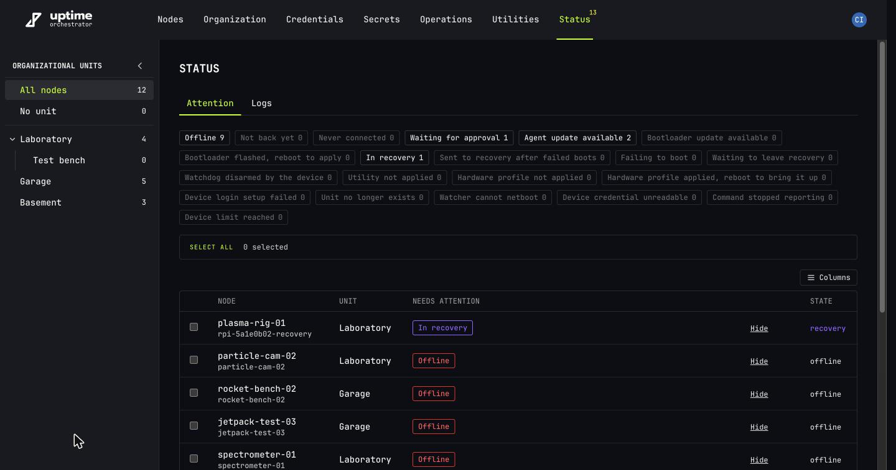
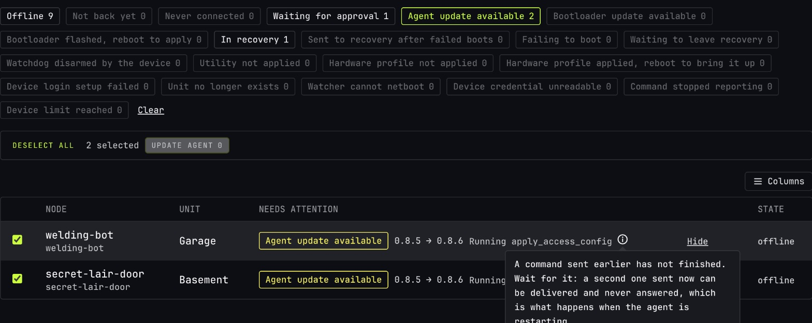

Status, attention and the audit trail
Find the nodes that need you, fix them in bulk, read the command log, and see who did what in the account.
The Status page answers two questions for the whole fleet: which nodes need an operator right now (Attention), and what the platform has sent to them (Logs). Who did what in the account is a third question, answered by the audit trail on the Account page.
The number next to Status in the top bar is the count of open conditions, not of nodes: a node that is offline and also has an agent update waiting counts twice.
The Attention tab
Open Status. The Attention tab lists every node with at least one open condition. The unit rail on the left narrows the list to one unit (No unit shows nodes outside any unit).

- The chips are filters, one per condition, each with the number of nodes that have it. Chips with a count above zero are bright; click one or more to show only those nodes, and Clear to drop the filter.
- The table has Node (name and hostname), Unit, Needs attention (one badge per condition, plus details such as the version pair
0.8.5 → 0.8.6), and State (online, offline, recovery). Columns adds or removes columns, including Since where the platform knows when the condition began. - Hide stops counting a node's conditions in this browser. The row stays in the list, and a condition comes back if it changes. Unhide reverses it.
- Offline nodes and nodes that may be lost (Offline, Unit no longer exists, Watcher cannot netboot, Device credential unreadable) are red; the rest are warnings.
Fixing conditions in bulk
Several conditions have an action. Tick nodes (or Select all) and the bar above the table offers the matching action with the number of nodes it would reach, for example Update agent 2. Some appear as a link next to the badge, such as Approve. Each action shows a confirmation saying what it does; actions that reboot a node or write firmware also ask you to tick an acknowledgement. A results dialog then lists, per node, Sent, Queued, Skipped or Failed.

An action counts only the nodes it can act on. A node that is still carrying an earlier command shows Running and the command name; the ⓘ explains that a second command now could be delivered and never answered. Wait for the first to finish. Actions that need a live connection say Needs the node online.
Every condition
| Chip | Raised when | What to do |
|---|---|---|
| Offline | The node has no connection and nothing more specific applies. | Check power and network. Queued commands wait for it. |
| Not back yet | Offline while the platform waits for it to return from a command it sent, such as a reboot or an OS install. | Usually wait. If it stays, treat it as offline. |
| Never connected | Approved, but the agent has not reported in, an hour after it was added. | Check the device was flashed and has network access. See Adding a device. |
| Waiting for approval | The device joined with an adoption token and waits for a person. | Approve it, or reject it from the node panel. |
| Agent update available | A newer agent is published on this install. | Update agent. An offline node gets it when it returns. |
| Bootloader update available | The EEPROM firmware is older than the one the platform would build. | Update bootloader, then reboot. |
| Bootloader flashed, reboot to apply | New firmware is written; it takes effect on the next boot. The platform never reboots by itself. | Reboot when it suits you. |
| In recovery | The node runs the network recovery system, so most OS-level work is held. | Finish what you started there, or boot it back into its OS. See Installing an OS. |
| Sent to recovery after failed boots | The node kept failing to boot its OS, so it was given recovery automatically. | Fix the reason, then Acknowledge to clear the mark. |
| Failing to boot | Failed boot attempts are accumulating, below the automatic recovery threshold. | Look at the node before it is sent to recovery. |
| Waiting to leave recovery | A one-time reboot into recovery is in flight; the previous boot target is restored when the node reports back. | Usually nothing. |
| Watchdog disarmed by the device | The device turned its own watchdog off (a disarm you asked for does not count). | Find out why, then arm it again. See Hardware and watchdog. |
| Utility not applied | A utility assigned to the node is not in the state its assignment asks for, or its last apply failed. | Apply utilities. See Utilities. |
| Hardware profile not applied | Hardware is declared for the node and has never been applied. | Apply profile. |
| Hardware profile applied, reboot to bring it up | The settings are written; they take effect on the next boot. | Reboot. |
| Device login setup failed | The last attempt to put the node's shell users and keys on the device failed. | Fix the cause, then Re-apply. See Access and credentials. |
| Unit no longer exists | The node points at a deleted unit. A network-first device in this state cannot boot. | Move the node to an existing unit. |
| Watcher cannot netboot | A watcher's boot order can no longer reach network boot, so it has no way back to recovery. | Fix the boot order at the device. |
| Device credential unreadable | No configured key can decrypt the node's device credential. | A server-side key problem; see the configuration reference. |
| Command stopped reporting | A command the node accepted has said nothing for over 30 minutes. | Look at the node's command history; actions on it stay held. |
| Device limit reached | The install already admits as many devices as its entitlement covers, so this node cannot be admitted. | Open subscription, or delete a node. |
If the platform could not check something (for example, the agent release list was unreachable), a line above the table names the checks that were skipped. Nodes may need attention for those reasons without appearing.
The Logs tab
Logs is the fleet's command log: every command the platform sent to a node, whoever or whatever sent it (you, a playbook, a utility apply, a self-healing retry). It is not the audit trail.

- Status chips: Registered, Sent, Running, Succeeded, Failed, Replaced, Expired, Skipped. With none selected, all are shown. Replaced (a newer command took its place), Expired (it waited past its deadline for a node that never came back) and Skipped (refused on arrival, usually an agent too old for it) are not failures. A command waiting for an offline node shows queued.
- Time window: Last 24 hours, Last 7 days (default), Last 30 days, All time. Filter by command matches the command name, such as
run_script. The unit rail narrows to one unit. - Columns: Time, Node, Command, Status, Details; Unit can be added with Columns. Details of commands that may contain secret values are shown as
[redacted — requires secret.read_value]; open the node to read them. - Click a row to open that node's panel; its command history has the full output. See Working with a node.
The API behind this tab is GET /api/v1/fleet/activity (filters ou_id, node_id, status, slug, since, paged).
The audit trail
The audit trail lists every privileged action on the account: secrets read, commands dispatched, terminals opened, playbooks created and started, members and roles changed, nodes approved or moved. Open the account menu, then Account Settings and the Audit tab. Only the account owner role, Super Admin, can read it; the tab is hidden from everyone else.

- Each entry has the time, the actor and a sentence: the action, its target and a short detail (
started a run — playbook=… nodes=1). Actions the platform took on its own, such as a scheduled playbook or a self-healing re-apply, show the platform as the actor. - Filter by action takes an exact action name, such as
secret.values_readorplaybook.run_start. - Nothing in the UI can delete an event.
Retention and export
The line above the list says how long this account's events are kept. The install default is 365 days (AUDIT_EVENT_RETENTION_DAYS; 0 keeps them forever); an operator can give one account its own value between 7 and 3650 days.
To keep events longer, copy them out before they age: GET /api/v1/audit-events (Super Admin only, newest first, page and per_page up to 200, optional action) returns the account's trail. Nothing else exports it. Details: the configuration reference.
Command history has its own retention, NODE_COMMAND_RETENTION_DAYS: kept forever by default, deleted after 90 days in the community compose file. Finished playbook runs are kept 30 days. A command still waiting for delivery is never deleted.
Other places problems show up
- Nodes list: the status icon (online, offline, recovery) and badges on the node row: PENDING, REBOOT PENDING (bootloader flashed, not rebooted), AUTO-RECOVERED (sent to recovery after failed boots), WATCHDOG OFF and UNDER-VOLTAGE. See A tour of the interface.
- Node panel: the status badge, update notes next to Bootloader and Agent, and the command history. See Working with a node.
- Playbook runs: a failed step and its output on Operations → Runs. See Playbooks.
Next: Playbooks.